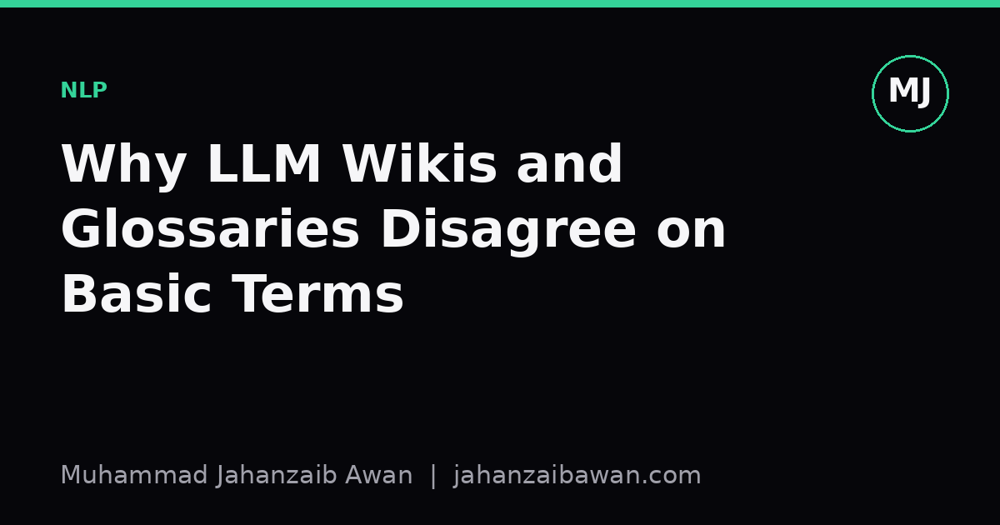

Why LLM Wikis and Glossaries Disagree on Basic Terms
Terms like hallucination, grounding and context window sound fixed, but every source defines them slightly differently. Here is how to pick a definition and stay consistent.

The same word, three different meanings
Ask three glossaries to define 'hallucination' and you will get three answers that overlap but do not match. One site calls it any output that is factually false. Another restricts it to claims that are false and unsupported by the retrieved context, which excludes a model confidently repeating a wrong fact that was actually present in its source documents. A third folds in fluent nonsense, like a grammatically perfect sentence about a person who does not exist, treating it as a special case rather than a subtype. None of these are wrong. They are just answering slightly different questions: is this about truth, about faithfulness to a given context, or about coherence versus correctness.
This matters more than it looks like it should, because the definition you pick changes what you measure. If 'hallucination' means 'unsupported by retrieved context', then a retrieval-augmented system that confidently repeats a stale or wrong document is, by that definition, not hallucinating. It is being faithful to bad input. If your definition is 'factually false relative to the world', the same output counts as a hallucination regardless of what the retriever handed it. Swap definitions halfway through a project and your error counts will shift even though nothing about the model changed. I have seen this cause real confusion in discussions where two people are arguing about whether a model 'hallucinates more' when, in fact, they are each scoring against a different yardstick.
The same splitting happens with 'grounding', 'context window', and 'few-shot learning'. Some sources use 'context window' to mean the maximum number of tokens a model can attend to in a single forward pass. Others use it loosely to mean 'the information you put in the prompt', conflating a hard architectural limit with a soft design choice about what you choose to include. 'Few-shot learning' sometimes means in-context examples given at inference time with no weight updates, and sometimes gets used, incorrectly in my view, to describe any scenario with a small training set, which is a much older and distinct idea from classical machine learning.
Why the disagreement exists and will not go away
Part of the problem is that this field moved faster than its vocabulary. Terms get coined informally in a blog post or a conference talk, picked up by practitioners before anyone writes a careful definition, and then crystallise into common usage with slightly different boundaries in different communities. Researchers working on factuality evaluation, engineers building retrieval pipelines, and people writing explainer content for general audiences all adopted 'hallucination' independently, each shaping it to fit the problem they were solving. There was no standards body deciding the boundary, so the boundary drifted.
There is also a genuine conceptual reason the term resists a single clean definition: truth and faithfulness are different axes, and 'hallucination' sits at their intersection in a way that different communities weight differently. A factuality researcher cares whether the claim is true in the world. A retrieval-augmented generation engineer cares whether the claim is supported by the documents the system was given, because that is the part of the pipeline they can actually fix. A product team cares whether the user was misled, which depends on tone and confidence as much as on the underlying fact. These are three legitimate, non-identical concerns, and 'hallucination' has become the word all three reach for.
A concrete worked example makes this vivid. Suppose a retrieval-augmented assistant is asked for a company's founding year. The retriever pulls a webpage that states the wrong year due to an old typo, and the model repeats it verbatim with full confidence. Under a faithfulness definition, this is a correct, non-hallucinating response: it accurately reflects the retrieved source. Under a truth definition, it is a hallucination: the claim is false. If you report 'hallucination rate' as a single number without stating which definition you used, two readers can look at the identical output and disagree about whether it should count, and both will be right according to their own glossary.
How to pick a definition and stick with it
The practical fix is not to find the one true definition, because it does not exist and waiting for consensus will stall any real work. Instead, state your working definition explicitly, in one sentence, before you start measuring anything. Write it down in your methods section or your project notes: 'for this analysis, hallucination means any claim in the output that is not entailed by the provided context, regardless of whether the claim is true in the world.' That single sentence resolves the ambiguity for every reader of your work, even if they would have chosen a different definition themselves.
Second, check whether your chosen definition is operational, meaning someone else could apply it to a transcript and get the same label you would. 'Factually false' is operational if you also specify what counts as a trusted reference for checking facts. 'Unsupported by context' is operational if you specify what counts as entailment, ideally with a worked example of a borderline case, such as a paraphrase that changes a number slightly. Vague definitions produce labelling disagreements between annotators even when everyone is acting in good faith, and that noise will show up later as unexplained variance in your results.
Third, when you read someone else's glossary entry or benchmark paper, do not assume their term means what you think it means. Look for the one or two sentences where they operationalise it, usually near the evaluation methodology rather than the introduction. If a paper reports a 'hallucination rate' of a certain percentage, that number is only comparable to another paper's number if the definitions line up, and in my experience they often do not. Treat cross-paper comparisons of these metrics with real caution unless both sides define the term the same way.
The underlying lesson generalises beyond this one term. Any time a field borrows ordinary language, like 'understanding', 'reasoning', or 'alignment', for a technical purpose, you should expect multiple reasonable definitions to coexist, and you should expect confusion whenever people swap between them without saying so. The discipline worth building is small but durable: before measuring something with a contested name, write down in plain language what you mean by it, and keep using that same meaning for the rest of the piece of work.